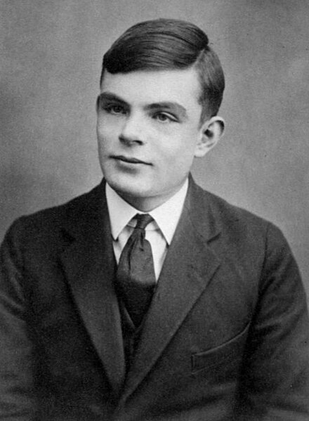

Alan Turing

Alan Turing em 1928, aos 16 anos
Aqui está a linha do tempo de Alan Turing
- 1912: Alan Mathison Turing nasce em 23 de junho, em Londres, Inglaterra.
- 1926: Ingressa na Sherborne School, uma escola de ensino médio onde mostra aptidão excepcional para matemática e ciências.
- 1931: Entra no King's College, na Universidade de Cambridge, onde estuda matemática.
- 1936: Publica o artigo "On Computable Numbers," introduzindo o conceito de uma "Máquina de Turing," que define a base teórica para os computadores modernos.
- 1938: Conclui seu doutorado na Universidade de Princeton, nos Estados Unidos.
- 1939-1945 (Segunda Guerra Mundial): Trabalha em Bletchley Park, onde lidera esforços para decifrar as mensagens criptografadas da máquina Enigma usadas pelos nazistas.
- Desenvolve a "Bomba," uma máquina que acelera a decodificação dos códigos.
- 1945: Recebe a Ordem do Império Britânico por suas contribuições durante a guerra.
- 1948: Torna-se professor na Universidade de Manchester, onde trabalha na construção de um dos primeiros computadores eletrônicos.
- 1950: Publica o artigo "Computing Machinery and Intelligence," introduzindo o famoso "Teste de Turing," um método para avaliar a inteligência artificial.
- 1952: É condenado por "indecência grave" devido à sua homossexualidade, então criminalizada no Reino Unido.
- Aceita uma punição de castração química em vez de prisão.
- 1954: Morre em 7 de junho, aos 41 anos, devido a envenenamento por cianeto. Sua morte é amplamente considerada um suicídio, embora algumas teorias sugiram acidente.
- 2009: O governo britânico emite um pedido de desculpas formal pelo tratamento injusto dado a Turing.
- 2013: Recebe um perdão póstumo da Rainha Elizabeth II.
- 2019: Anunciado como o rosto da nota de £50 no Reino Unido, como reconhecimento por suas contribuições à ciência e tecnologia.
"A única coisa que é certa sobre a computação é que ela ainda não é completa."
--Alan Turing
Se você quiser saber mais sobre , Verifique a biografia dele Alan Turing Biografia